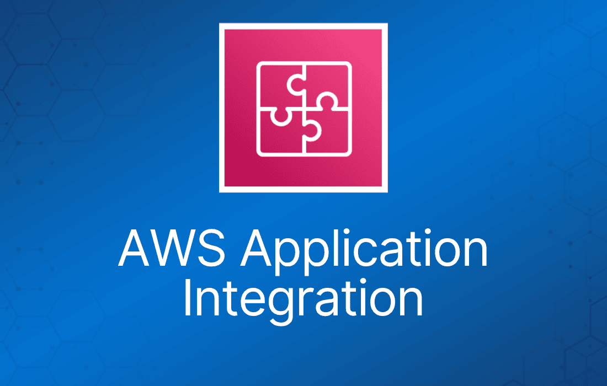
AWS 应用集成服务是一套服务，用于在解耦架构中实现应用组件之间的通信，适用于微服务应用、分布式系统和 serverless 应用。
AWS 应用集成服务
AWS 应用集成服务是一组服务，用于实现应用之间的解耦通信。
这些服务为微服务、分布式系统和 serverless 应用提供解耦能力。
借助 AWS 应用集成服务，你可以连接各个应用，而无需编写自定义代码来实现互操作。
解耦的应用可以互相协作，同时又能容忍任何单个组件的故障或过载。
与应用集成相关的服务如下：
| 服务 | 作用 | 典型使用场景 |
| Simple Queue Service (SQS) | 消息队列；存储转发模式 | 构建分布式 / 解耦应用 |
| Simple Notification Service (SNS) | 在云端搭建、运营并发送通知 | CloudWatch 告警触发时发送邮件通知 |
| Step Functions | 开箱即用地通过可视化工作流协调 AWS 服务组件 | 订单处理工作流 |
| Simple Workflow Service (SWF) | 需要支持外部流程或专门的执行逻辑 | 有人工参与的工作流，如订单履约系统或流程化审批请求
注意： AWS 建议新应用优先考虑使用 Step Functions 而不是 SWF |
| Amazon MQ | 面向 Apache Active MQ 和 RabbitMQ 的消息代理服务 | 需要支持行业标准 API 和协议的消息队列；将队列迁移到 AWS |
| Amazon Kinesis | 收集、处理并分析流数据。 | 从 IoT 设备收集数据以供后续处理 |
Amazon SNS
Amazon Simple Notification Service（Amazon SNS）是一项全托管的消息服务，同时支持应用到应用（A2A）和应用到人（A2P）的通信。
其发布/订阅（pub/sub）功能为高吞吐、推送式、多对多的使用场景提供消息能力。
Amazon SNS 用于在分布式系统、微服务和事件驱动的 serverless 应用之间发送通知。
推送通知可以发送到 Apple、Google、Fire OS 和 Windows 设备，以及中国区内通过百度云推送的 Android 设备。
Amazon SNS 还可以通过 SMS 短信、email、SQS 队列或任何 HTTP endpoint 发送通知。
Amazon SNS 通知还可以触发 Lambda 函数。
Amazon SNS 价格低廉，采用按使用量付费模式，无前期费用。
SNS 采用发布-订阅模型，用户或应用订阅 SNS topic。
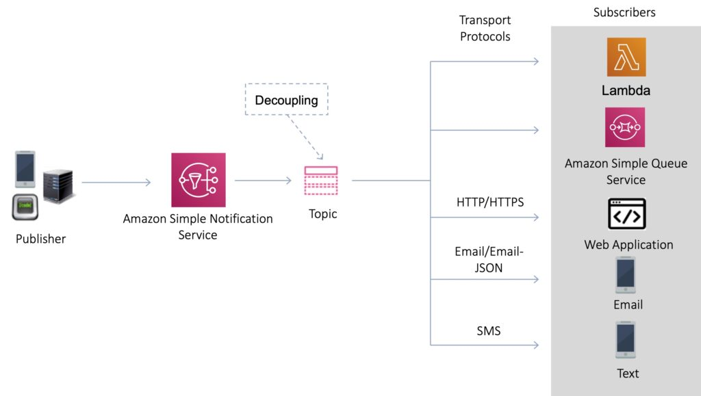
Amazon SNS 为应用提供解耦能力，使消息可以被异步处理。
SNS Topic
可以使用 Topic 对多个接收方进行分组。
Topic 是一个“接入点”，允许接收方动态订阅同一通知的相同副本。
一个 topic 可以支持投递到多种 endpoint 类型。
所有消息都会跨多个可用区冗余存储。
提供即时的推送式投递。
通过多种传输协议提供灵活的消息投递。
SNS Subscriber 和 Endpoint
订阅 SNS topic 时支持以下 endpoint 类型：
- HTTP/HTTPS。
- Email/Email-JSON。
- Amazon Kinesis Data Firehose。
- Amazon SQS。
- AWS Lambda。
- Platform application endpoint（移动推送）。
- SMS。
SNS Fanout
你的 publisher 系统可以将消息扇出（fanout）到多个 subscriber 系统，包括 Amazon SQS 队列、AWS Lambda 函数和 HTTPS endpoint（用于并行处理），以及 Amazon Kinesis Data Firehose。
你可以从所选队列可用的 topic 列表中，将一个或多个 Amazon SQS 队列订阅到某个 Amazon SNS topic。
Amazon SQS 会管理订阅及所需的权限。
当你向 topic 发布消息时，Amazon SNS 会将消息发送到每个已订阅的队列。
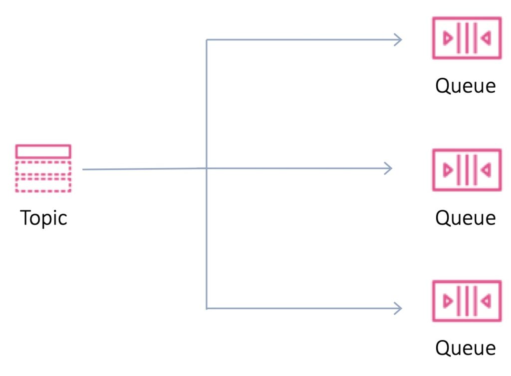
应用到应用（A2A）消息支持扇出：
- 扇出到 Kinesis Data Firehose delivery stream。
- 扇出到 Lambda 函数。
- 扇出到 Amazon SQS 队列。
- 扇出到 HTTP/S endpoint。
- 扇出到 AWS Event Fork Pipelines。
Amazon SQS
Amazon Simple Queue Service（SQS）是一个分布式队列系统，让 Web 服务应用能够快速、可靠地将应用中某个组件生成的消息排队，交由另一个组件消费。
Amazon SQS 让你可以在软件组件之间发送、存储和接收消息。
Amazon SQS 队列是等待处理的消息的临时存储库。
SQS 队列在生产并保存数据的组件与接收数据进行处理的组件之间充当缓冲区。
当 producer 产生工作的速度快于 consumer 的处理速度，或者 producer、consumer 只是间歇性连接网络时，SQS 队列可以解决由此产生的问题。
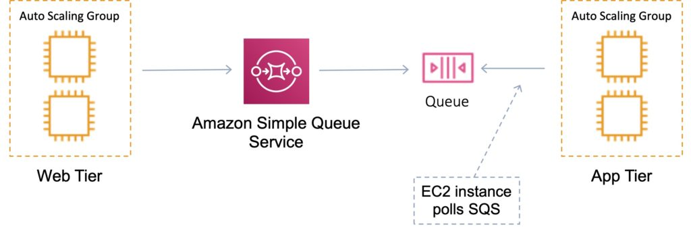
这就是所谓的解耦 / 松耦合，有助于为应用实现弹性。
Amazon SQS 是拉取（pull）模式的，而不是推送（push）模式（Amazon SNS 是推送模式）。
消息最大 256KB。
消息可以在队列中保留 1 分钟到 14 天。
默认保留期为 4 天。
SQS 保证你的消息至少被处理一次。
SQS 队列
队列名称在一个 region 内必须唯一。
队列有两种类型——标准队列（standard）和 FIFO 队列。
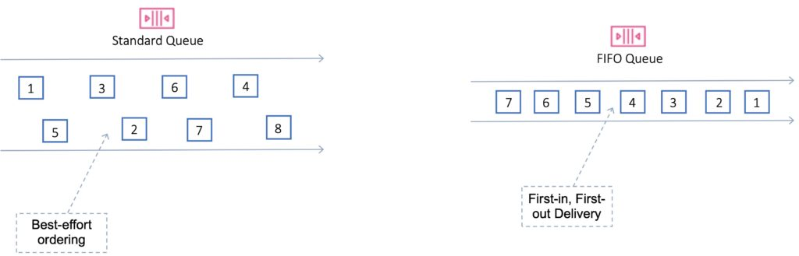
标准队列（Standard）
默认队列类型。
每秒事务数几乎无上限。
保证消息至少被投递一次。
偶尔可能会有一份消息的多个副本被乱序投递。
提供尽力而为的排序，确保消息通常按发送顺序投递。
先进先出（FIFO）
提供精确一次（exactly-once）处理。
消息发送和接收的顺序被严格保留，每条消息只投递一次，并在 consumer 处理并删除之前一直可用。
队列中不会引入重复消息。
FIFO 队列还支持消息组，允许在单个队列内存在多个有序消息组。
限制为每秒 300 个事务（TPS），但具备标准队列的所有功能。
FIFO 队列的去重：
- 随消息提供 MessageDeduplicationId。
- 去重间隔为 5 分钟。
- 基于内容去重——MessageDeduplicationId 由消息体的 SHA-256 生成。
FIFO 队列的排序：
- 要确保消息之间严格排序，请指定 MessageGroupId。
- Group ID 不同的消息可能会被乱序接收。
- Group ID 相同的消息一次只会投递给一个 consumer。
FIFO 队列要求为消息添加 Message Group ID 和 Message Deduplication ID 参数。
Message Group ID：
- 指定消息属于某个特定消息组的标签。属于同一消息组的消息保证按 FIFO 方式处理。
Message Deduplication ID：
- 在去重间隔内用于消息去重的令牌。
下表对标准队列和 FIFO 队列进行了并排对比：
| 标准队列 | FIFO 队列 |
| 无限吞吐：标准队列对每个 API 操作支持几乎无上限的每秒事务数（TPS）。 | 高吞吐：FIFO 队列支持每秒最多 300 条消息（每秒 300 次发送、接收或删除操作）。当每次操作批量处理 10 条消息（最大值）时，FIFO 队列可支持每秒最多 3,000 条消息 |
| 尽力而为排序：偶尔消息可能按与发送顺序不同的顺序投递 | 先进先出投递：消息发送和接收的顺序被严格保留 |
| 至少一次投递：消息至少投递一次，但偶尔一条消息会被投递多个副本 | 精确一次处理：消息只投递一次，并在 consumer 处理并删除之前一直可用。队列中不会引入重复消息 |
可扩展性与持久性
你可以拥有多个不同优先级的队列。
通过创建更多队列来实现扩展。
SQS 将所有消息队列和消息存储在单个高可用 AWS region 内，并跨多个冗余 AZ。
Visibility timeout（可见性超时）
指一条消息被读取者取走后，在队列中不可见的时间长度。
只要任务在 visibility timeout 到期前处理完成，该消息就会从队列中删除。
如果任务未在 visibility timeout 内处理完，消息会重新变为可见，由另一个读取者处理。
这可能导致同一条消息被投递两次。
默认 visibility timeout 为 30 秒。
如果任务耗时超过 30 秒，就调大该值。
最大值为 12 小时。
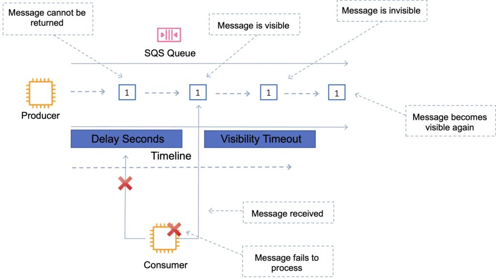
SQS 轮询
SQS 使用短轮询（short polling）和长轮询（long polling）。
Amazon SQS 长轮询是一种从 SQS 队列检索消息的方式。
短轮询立即返回（即使消息队列为空）。
长轮询在消息到达队列或长轮询超时之前不会返回响应。
长轮询可以在队列级别启用，也可以在 API 级别使用 WaitTimeSeconds 启用。
当 Receive Message Wait Time 大于 0 秒且最大为 20 秒时，长轮询生效。
短轮询：
- 不等待消息出现在队列中。
- 只查询一部分可用服务器上的消息（基于加权随机执行）。
- 短轮询是默认方式。
- ReceiveMessageWaitTime 设置为 0。
- 请求次数更多，意味着成本更高。
长轮询：
- 请求次数更少，降低成本。
- 通过查询所有服务器，消除“假空”响应。
- SQS 会等到队列中有消息可用时才发送响应。
- 请求中至少包含一条可用消息，最多不超过 ReceiveMessage 操作中指定的最大消息数。
- 如果应用期望接收消息调用立即返回响应，则不应使用长轮询。
- ReceiveMessageWaitTime 设置为非零值（最大 20 秒）。
- 每百万请求的计费与短轮询相同。
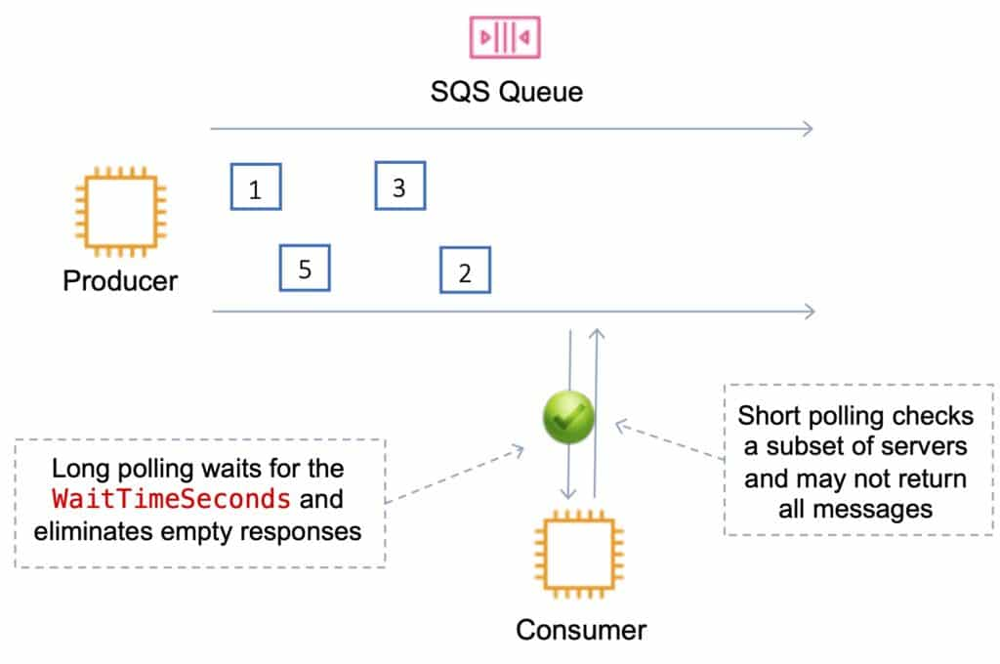
Dead-Letter Queue（死信队列）
死信队列的主要任务是处理消息失败。
死信队列让你可以将无法正确处理的消息放到一边隔离起来，以确定处理失败的原因。
它不是一种队列类型；它是一个在另一个标准或 FIFO 队列的配置中被指定为死信队列的标准或 FIFO 队列。
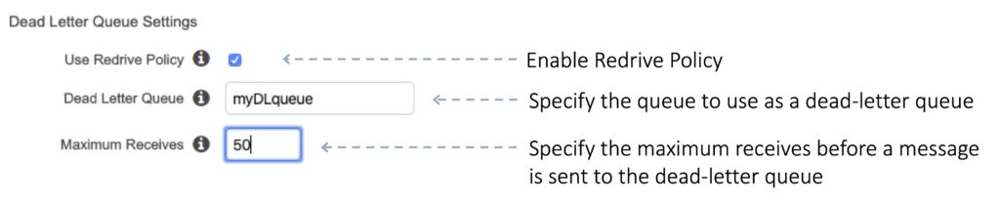
当一条消息的 ReceiveCount 超过队列的 maxReceiveCount 时，该消息会被移动到死信队列。
如果应用会持续重试传输，则不应在标准队列中使用死信队列。
死信队列会破坏 FIFO 队列中的消息顺序。
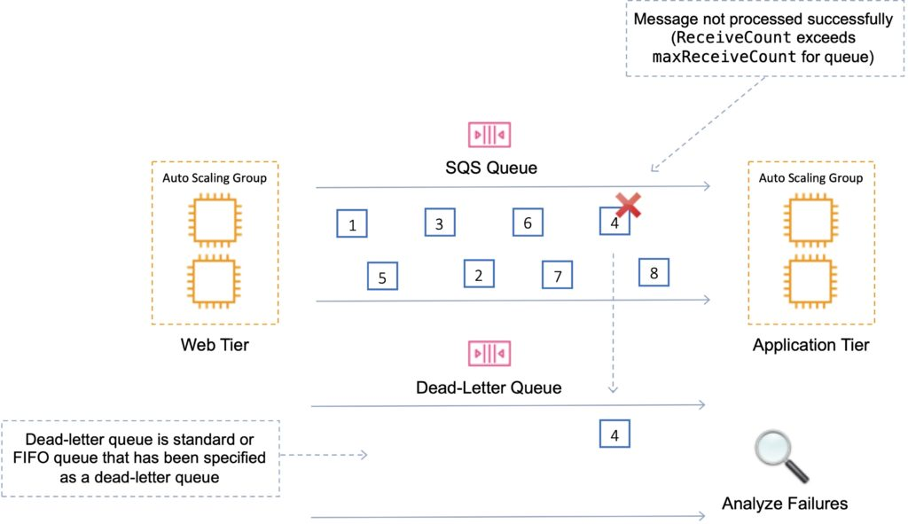
SQS Delay Queue（延迟队列）
延迟队列将新消息投递到队列的时间推迟若干秒。
发送到延迟队列的消息在延迟期间对 consumer 不可见。
默认延迟为 0 秒，最大为 900 秒（15 分钟）。
对于标准 SQS 队列，修改此设置不影响已在队列中的消息的延迟，只影响新消息。
对于 FIFO 队列，此设置会影响已在队列中的消息的延迟。
何时使用延迟队列：
- 大型分布式应用可能需要在处理中引入延迟。
- 你需要对整个队列的消息应用延迟。
- 例如，增加几秒钟延迟，以便在向客户发送在线交易确认通知之前，先完成销售或库存数据库的更新。
DLQ 必须与源队列类型相同。
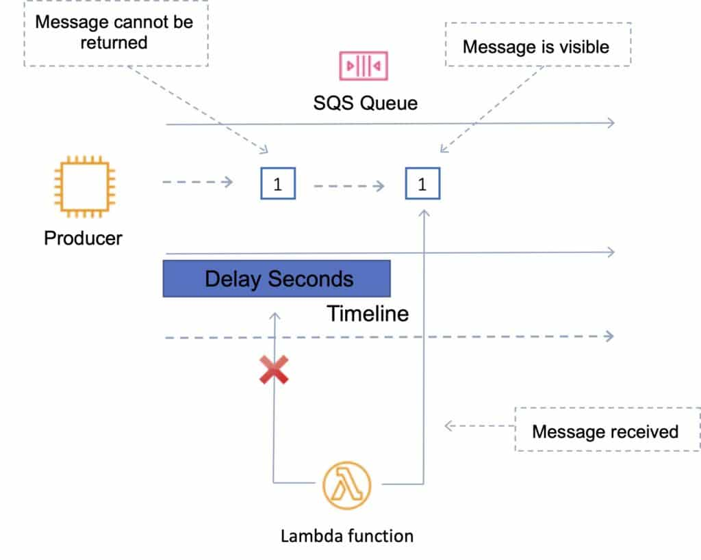
Lambda 与 Amazon SQS
SQS 可以配置为 AWS Lambda 函数的事件源。
Lambda 与 SQS：
- 你可以使用 AWS Lambda 函数来处理 Amazon Simple Queue Service（Amazon SQS）队列中的消息。
- Lambda event source mapping 支持标准队列和先进先出（FIFO）队列。
- 借助 Amazon SQS，你可以将任务从应用的某个组件卸载到队列中，并异步处理它们。
- Lambda 轮询队列，并以包含队列消息的事件同步调用你的 Lambda 函数。
- Lambda 批量读取消息，每个批次调用一次函数。
- 当函数成功处理一个批次后，Lambda 会从队列中删除这些消息。
SQS Extended Client
SQS 中消息最大为 256 KB。
你可以使用 Amazon S3 和 Amazon SQS Extended Client Library for Java 来管理 Amazon SQS 消息。
适用于存储和消费最大 2 GB 的消息。
你可以使用 Amazon SQS Extended Client Library for Java 完成以下操作：
- 指定消息是始终存储在 Amazon S3 中，还是仅在消息大小超过 256 KB 时才存储。
- 发送一条引用存储在 Amazon S3 bucket 中单个消息对象的消息。
- 从 Amazon S3 bucket 获取对应的消息对象。
- 从 Amazon S3 bucket 删除对应的消息对象。
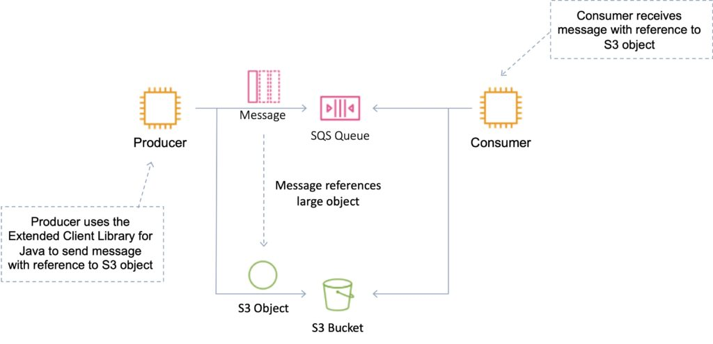
监控
CloudWatch 与 SQS 集成，你可以查看和监控队列指标。
CloudWatch 指标每 5 分钟自动收集一次。
如果队列中包含任何消息，或有任何 API 操作访问它，CloudWatch 会在最长 6 小时内将其视为活跃队列。
CloudWatch 不收费（无详细监控）。
CloudTrail 捕获来自 SQS 的 API 调用，并记录到指定的 S3 bucket。
安全性
你可以使用 IAM policy 控制谁可以读/写消息。
可以使用身份验证来保护队列中的消息（谁可以发送和接收）。
SQS 符合 PCI DSS 1 级标准，且符合 HIPAA 使用条件。
传输中安全通过 HTTPS 提供。
可以使用 KMS 启用服务器端加密（SSE）。
- 可以设置要使用的 CMK。
- 可以设置数据密钥重用周期。
- SSE 只加密消息体，不加密消息属性。
IAM policy 必须允许使用 SQS。
你也可以在 SQS 队列访问策略中指定权限：
- 提供更细粒度的控制。
- 控制传入的请求。
Amazon SQS API
考试中需要了解的 API：
CreateQueue（aws sqs create-queue）：
- 创建一个新的标准或 FIFO 队列。可以在请求中传入一个或多个属性。
DeleteQueue（aws sqs delete-queue）：
- 删除由 QueueUrl 指定的队列，无论队列内容如何。
- 如果指定的队列不存在，Amazon SQS 会返回成功响应。
PurgeQueue（aws sqs purge-queue）：
- 删除由 QueueURL 参数指定的队列中的消息。
SendMessage（aws sqs send-message）：
- 向指定队列投递一条消息。
ReceiveMessage（aws sqs receive-messsage）：
- 从指定队列检索一条或多条消息（最多 10 条）。
- 使用 WaitTimeSeconds 参数可启用长轮询支持。
DeleteMessage（aws sqs delete-message）：
- 从指定队列删除指定的消息。
- 要选择要删除的消息，请使用消息的 ReceiptHandle（而不是发送消息时收到的 MessageId）。
ChangeMessageVisibility（aws sqs change-message-visibility）：
- 将队列中指定消息的 visibility timeout 更改为新值。
- 消息的默认 visibility timeout 为 30 秒。
- 最小值为 0 秒。
- 最大值为 12 小时。
为了降低成本或用单个操作处理最多 10 条消息，可以使用以下操作：
- SendMessageBatch
- DeleteMessageBatch
- ChangeMessageVisibilityBatch
Amazon SWF
Amazon Simple Workflow Service（SWF）是一项 Web 服务，让你可以轻松协调跨分布式应用组件的工作。
Amazon SWF 用于处理包含并行或串行步骤的后台任务。
你可以把 Amazon SWF 看作一个全托管的状态跟踪器和任务协调器。
如果应用的步骤需要超过 500 毫秒才能完成、需要跟踪处理状态，或者任务失败时需要恢复或重试，就适合使用 Amazon SWF。
使用 SWF，你可以以工作流的形式构建分布式异步系统。
它会跟踪工作流状态，你可以通过 API 进行交互和更新。
最适合有人工参与的工作流，如订单履约系统或流程化审批请求。
AWS 建议新应用优先考虑使用 AWS Step Functions 而不是 SWF。
SWF 支持多种使用场景的应用，包括媒体处理、Web 应用后端、业务流程工作流和分析管道。
注册是一次性步骤，你需要为每种不同类型的工作流和活动各执行一次。
SWF 工作流执行的最长完成时间为 1 年。
SWF 使用面向任务的 API。
SWF 确保任务只被分配一次，绝不重复。
SWF 会跟踪应用中的所有任务和事件。
domain 是应用资源（如工作流、活动和执行）的逻辑容器。
Worker 是与 Amazon SWF 交互的程序，用于获取任务、处理收到的任务并返回结果。
decider 是控制任务协调的程序，即根据应用逻辑控制任务的排序、并发和调度。
SWF 应用包含以下逻辑组件：
- Domain。
- Workflow。
- Activity。
- Task List。
- Worker。
- Workflow Execution。
Amazon MQ
Amazon MQ 是面向 ActiveMQ 的托管消息代理服务。
Amazon MQ 支持行业标准 API 和协议，因此你可以在不重写代码的情况下迁移消息系统和应用。
Amazon MQ 提供经济高效且灵活的消息处理能力——你按 broker 实例和存储使用量付费。
Amazon MQ 负责 ActiveMQ broker 的管理和维护，并自动预配置高可用基础设施。
使用 Amazon MQ，你可以通过 AWS Management Console、AWS CloudFormation、命令行界面（CLI）或简单的 API 调用，在几分钟内启动一个生产级消息代理。
Amazon MQ 是全托管的，并在一个 region 内实现高可用。
Amazon MQ 将你的消息跨多个可用区（AZ）冗余存储。
Active/standby broker 专为高可用而设计。
当 broker 发生故障，甚至整个 AZ 中断时，Amazon MQ 会自动故障转移到 standby broker，你可以继续发送和接收消息。
支持 ActiveMQ API，以及 JMS、NMS、MQTT 和 WebSockets。
它被设计为本地消息代理的直接替代品（drop-in replacement）。
如果你从零开始构建新应用，请使用 SQS。
如果你想轻松省事地将现有消息代理迁移到 AWS，请使用 MQ。
Amazon MQ 为消息提供静态加密和传输中加密。
可以轻松确保消息以加密格式安全存储。与 broker 的连接使用 SSL，并且访问可以限制在 Amazon VPC 内的私有 endpoint，从而将 broker 隔离在你自己的虚拟网络中。
你可以配置 security group 来控制对 broker 的网络访问。
Amazon MQ 与 Amazon CloudWatch 和 AWS CloudTrail 集成。通过 CloudWatch，你可以监控 broker、队列和 topic 的指标。
AWS Step Functions
AWS Step Functions 可以将分布式应用的各个组件协调为可视化工作流中的一系列步骤。
你可以快速构建并运行状态机，以可靠、可扩展的方式执行应用的各个步骤。
工作方式：
- 用基于 JSON 的 Amazon States Language 定义工作流的各个步骤。可视化控制台会自动按执行顺序绘制每个步骤。
- 启动一次执行，可视化并验证应用的各个步骤是否按预期运行。控制台会高亮显示每个步骤的实时状态，并提供每次执行的详细历史记录。
- AWS Step Functions 为你运行并扩展应用的各个步骤及底层计算资源，确保应用在需求增长时仍能可靠执行。
它是一个托管的工作流和编排平台。
它具备可扩展性和高可用性。
你将应用定义为状态机。
可以创建任务、串行步骤、并行步骤、分支路径或计时器。
使用 Amazon State Language 声明式 JSON。
应用可以通过 Step Function API 交互和更新流。
提供描述流程和实时状态的可视化界面。
提供每个步骤执行的详细日志。
AWS Step Functions 的特性：
- 内置错误处理 – AWS Step Functions 跟踪每个步骤的状态，因此你可以自动重试失败或超时的任务、捕获特定错误并优雅恢复，无论任务耗时几秒还是几个月。
- 自动扩缩 – AWS Step Functions 会根据工作负载变化，自动扩展运行应用各步骤所需的操作和底层计算资源。随着请求频率增加，Step Functions 会自动扩展，确保应用工作流的性能始终保持在高水平。
- 按使用量付费 – 使用 AWS Step Functions，你只需为应用工作流从一个步骤到下一个步骤的转换付费，这称为状态转换（state transition）。计费按状态转换计量，无论每个状态持续多久（最长一年）。
- 执行事件历史 – AWS Step Functions 为每次执行创建详细的事件日志，因此当出现问题时，你不仅能快速定位出错位置，还能知道原因。所有执行历史都可以通过可视化和编程方式获取，便于快速排查和修复故障。
- 高可用性 – AWS Step Functions 内置容错能力。Step Functions 在每个 region 的多个可用区中保持服务容量，帮助保护应用工作流免受单台机器或数据中心设施故障的影响。没有维护窗口或计划停机。
- 管理安全 – AWS Step Functions 与 AWS Identity and Access Management（IAM）集成。可以使用 IAM policy 控制对 Step Functions API 的访问。